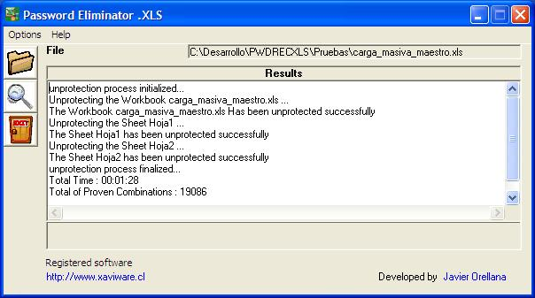
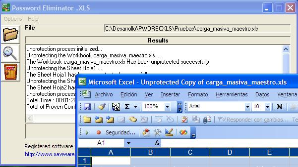

Password Eliminator .XLS is a program to unprotect Workbooks and Sheets of Microsoft Excel 5.0/7.0/97/2000/2002-XP/2003. protected with password.
The current version of Password Eliminator .XLS will run on Windows 95, 98, Me, 2000, NT, XP.
Limitations:
! bug fixed
+ improvement/modification
Version 2.0.0 - 2011/10/15
[+] User Interface is Improved
[+] "Register XLS" is added automatically when the user push the email link in register window
[+] Author e-Mail contact link is removed from the Main Window
[+] Buy now button is added on Registration Form.
[+] Registration menu item is added on Main Form.
[+] Links to product webpage in the Spanish or English whichever is applicable.
[+] Links to other products webpages are added.
[+] Header of some Forms in Spanish or English whichever is applicable.
[+] Registration Codes formula has been Change.
[+] Setup is re-generated with InnoSetup.
[+] Help File in Spanish is Included.
[+] Unistaller shorcut is added in Program Files menu.
[+] Other Products Menu is Updated.
Version 1.0.4
[+] Recover Password based on all Passwords of the file .
[+] Buy now button is added.
Version 1.0.3
[+] Internal Error Handling and Log is added.
Version 1.0.2
[+] Polish Language Interface File is added. [Translator - Sylwester £ukaszek]
Version 1.0.1
[!] bugfix (Resize Main Window)
[!] Go to Password Eliminator .XLS (Menu) has been redirected.
[+] Bulgarian Language Interface is added. [Translator - Kaloyan Stolinov]
[+] Romanian Language Interface File is added. [Translator - Cristian Stefan]
Version 1.0.0
First public release
Password Eliminator .XLS program is very easy to use:
you need only do 2 steps.

you get an Unprotected Copy of your .XLS file.

XaviWare Software Home Page
http://www.xaviware.cl
XaviWare Software e-Mail
xaviware@xaviware.cl
Password Excel .XLS Home Page
http://www.xaviware.cl/pwdxls.aspx
Technical Support e-Mail
support@xaviware.cl
Technical Support Phone
+56 98 639 70 57
Sales Division e-Mail
sales@xaviware.cl
This is not free Software!
If you want to use the limitations free program you must pay a registration fee. For information about prices and ordering details please go to XaviWare website: http://www.xaviware.cl/purchase.aspx
All products can be ordered worldwide. Online orders are accepted as well as traditional phone, fax, mail/check and corporate purchase orders.
To order online:
This user license agreement (the "AGREEMENT") is an agreement between you (individual or single entity) and XaviWare, for the XaviWare software (the "SOFTWARE") that is accompanying this AGREEMENT.
The SOFTWARE is the property of XaviWare and is protected by copyright laws and international copyright treaties. The SOFTWARE is not sold, it is licensed.
TRIAL VERSION
If you accept the terms and conditions of this AGREEMENT, you have certain rights and obligations as follows:
YOU MAY:
YOU MAY NOT:
DISTRIBUTION:
You are hereby licensed to make as many copies of the TRIAL VERSION as you wish and distribute them to anyone provided that all files are intact. You must distribute the install form of the TRIAL VERSION (not the files resulting from an installation). You are not allowed to sell the TRIAL VERSION (except for shipment and handling charges). Computer Magazines are authorized to distribute it on any Cover Disk or CD-ROM without any permission. Please inform us by e-mail each time you distribute the TRIAL VERSION.
WARRANTY DISCLAIMER
The SOFTWARE is supplied "AS IS". XaviWare disclaims all warranties, expressed or implied, including, without limitation,the warranties of merchantability and of fitness for any purpose. The user must assume the entire risk of using the SOFTWARE.
DISCLAIMER OF DAMAGES
XaviWare assumes no liability for damages, direct or consequential, which may result from the use of the SOFTWARE, even if XaviWare has been advised of the possibility of such damages. Any liability of the seller will be limited to refund the purchase price.